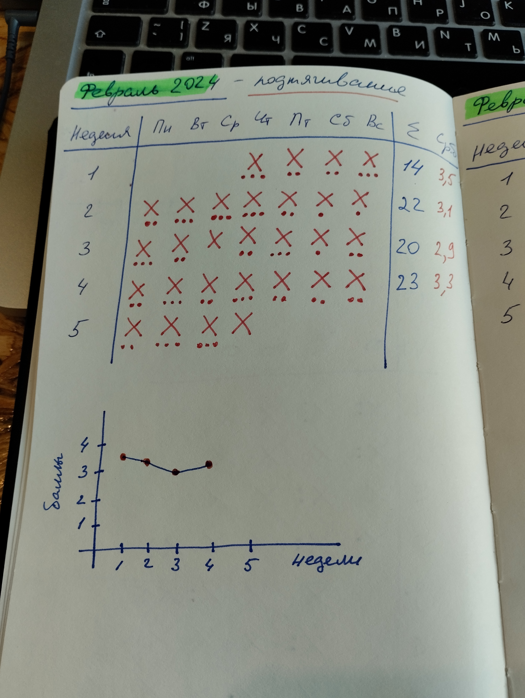
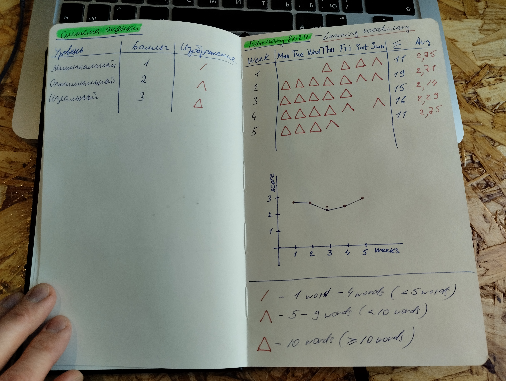

Выпуск #18. Успешный и продуктивный
Опубликовано 11.03.2024Успешный и продуктивный инженер, успешный и продуктивный технический писатель, успешный и продуктивный переводчик и т.д. Многие из нас хотят быть успешными и продуктивными.
В сегодняшнем выпуске я поделюсь своими размышлениями о продуктивности и как она может помочь нам преуспеть в личной и профессиональной жизни.
Полезные ссылки
«I Built a Secret Habit Building System» (Daily Atomic Steps)
«Атомные привычки. Как приобрести хорошие привычки и избавиться от плохих» (Джеймс Клир)
Слушайте подкаст на любимых платформах


Поделитесь подкастом с друзьями и коллегами
Расшифровка выпуска
00:00 - 03:23 Вступление
Добро пожаловать в подкаст технического коммуникатора Техкомпод!
С вами Владимир Юсупов - технический коммуникатор и ведущий данного подкаста.
Выпуск номер восемнадцать.
Успешный и продуктивный…
И не столь важно, кто это - успешный и продуктивный инженер, успешный и продуктивный технический писатель, успешный и продуктивный переводчик и т.д. Это в равной степени относится к специалистам любой профессии. Уверен, что многие из нас хотят быть успешными и продуктивными.
Как и всегда, сразу приведу краткие определения этим двум понятиям. Для этого я воспользовался своим любимым толковым словарем Ожегова.
ПРОДУКТИВНЫЙ, Производительный, плодотворный.
ПРОИЗВОДИТЕЛЬНЫЙ, Дающий очевидные результаты.
УСПЕШНЫЙ, Сопровождающийся успехом.
УСПЕХ, Хорошие результаты в работе, учебе.
Другими словами, успешным и продуктивным можно назвать человека, который добивается очевидных положительных результатов в своей деятельности. Я бы еще добавил здесь - за определенный период времени.
На мой взгляд, эти понятия (успешный и продуктивный) неразрывно связаны друг с другом. Например, мы просто не можем быть успешными в каком-то деле, когда действуем непродуктивно, то есть попусту растрачиваем время и энергию. И, наоборот, если мы продуктивно выполняем свою работу, то через какое-то время становимся успешными в своем деле.
В сегодняшнем выпуске я поделюсь своими размышлениями о продуктивности и как она может помочь нам преуспеть в личной и профессиональной жизни. Ни в коем случае не воспринимайте материал выпуска как нечто из разряда «я научу вас быть успешными и богатыми». Нет. Здесь совсем не об этом. Это лишь мои мысли и некоторые техники, о которых я узнал из различных источников. Что-то я использую в неизменном виде, в каких-то случаях доработал под себя. Я понял, что мне это помогает на основном месте работы, а также в моих личных проектах. Возможно, вы что-то сможете взять себе на заметку, возможно, нет. В любом случае, я реализую свой внутренний запрос на то, чтобы поделиться информацией. Решение слушать или не слушать остается за вами. Тем, кто решил остаться, приятного прослушивания!
Сделайте выпуски подкаста интереснее для себя
Ответьте всего на три простых вопроса и уделите одну минуту вашего времени.
03:24 - 04:25 Успех = привычки
Одним из источников успеха является продуктивность, как я отметил ранее. В свою очередь, продуктивность тоже не рождается из вакуума, у нее тоже есть своя отправная точка. И точка эта - привычки.
Большая часть того, что, и главное, как мы делаем в течение каждого дня зависит от наших привычек. Где-то мне попадалась информация… Приношу свои извинения, что не могу сослаться на первоисточник… Тем не менее, по мнению психологов привычки составляют до 60% времени повседневной жизни взрослого человека.
Таким образом, если выстроить последовательность, то получается следующее: привычки оказывают влияние на продуктивность, а та, в свою, очередь, - на успех. Значит наш успех во многом зависит от наших привычек.
Казалось бы, все понятно. Заводи нужные и хорошие привычки и будет тебе счастье. Но не все так просто.
04:26 - 06:00 Разные типы людей
Не знаю, как вам, а мне такие вещи даются нелегко.
Все мы разные. Есть люди с сильной волей и характером, которые могут сходу решить внедрить в свою жизнь новую привычку, и она поможет им достигнуть нужного результата. Да, такие люди есть. На мой взгляд, их не так много. По крайней мере, среди моего окружения. Но они есть. Например, моя дочка. Да, она еще мала и использует это качество пока еще неосознанно, на уровне инстиктов, но я вижу, что она как раз из таких людей.
Но не все из нас такие, которые могут привить себе новые привычки просто волевым решением.
Есть другой тип людей, к которым я отношу и себя.
Для принятия новой привычки мне необходимо видеть прогресс. И не просто осознавать, что я продвигаюсь в верном направлении, а буквально видеть. Видимо, профессия оказывает такое влияние. Люблю визуализировать информацию в виде таблиц, графиков, диаграмм. Также я очень люблю пользоваться блокнотами. Понимаю, что мало кому сейчас интересно вести записи в обычных физических блокнотах. Многие все-таки предпочитают использовать цифровой вариант - различные приложения. Я тоже пользуюсь разными приложениями, но вот что касается записей - для меня выбор однозначен - аналоговый вариант с ручкой, которая приятно и мягко пишет, и красивым удобным блокнотом, который приятно брать в руки, перелистывать.
06:01 - 08:22 Трекер продуктвности и привычек
Так вот, я пробовал разные техники анализа своей продуктивности и оценки полезных привычек. Но однажды на ютюбе натолкнулся на видео одного парня, то ли турка, то ли иранца, то ли иранца, который живет в Турции… Не суть… В общем, парень оказался толковый. Он поделился своим способом оценки продуктивности. Ссылка на это видео в описании выпуска. В общем, решил я протестировать его трекер привычек и продуктивности. Сначала я использовал этот способ “как есть”. Потом немного доработал и подстроил под себя.
Суть исходного варианта кроется в создании четырех уровней достижения небольших целей, которые в конечном счете приводят к выработке привычки. Итак, в трекере представлены следующие уровни: входной (show up version), минимальный (minimal version), удовлетворительный (satisfying version), идеальный (ideal version).
Возможно, у вас возник вопрос - зачем все эти уровни? Не проще ли выбрать какой-то один и следовать ему. В этом то как раз и все дело. Подобные уровни не нужны, если вы - волевой человек, о которых я упомянул ранее, и вам ничего не стоит завести новую привычку. Но взгляните на мир более реалистично. У нас не всегда бывает достаточно времени, иногда не самое хорошее самочувствие или настроение, и много других отговорок. Если мы замахнемся, допустим, на идеальный вариант, то какое-то время нам хватит энтузиазма поддерживать развитие привычки на выбранном уровне. Но рано или поздно, мы поймем, что не выдерживаем такого ритма. Причем это справедливо даже для минимального уровня.
В книге Джеймса Клира «Атомные привычки», которая также упоминается в трекере, автор говорит, что новая привычка не должна быть вызовом для вас (Джеймс Клир, Атомные привычки, 2018, стр. 98). Уровни помогут вам, что называется, войти в колею.
08:23 - 10:06 Уровни привычек
Теперь подробнее о каждом уровне.
Итак, начну с идеального.
Идеальный уровень на то и называется идеальным, чтобы стремиться к нему. Вам не обязательно каждый день выполнять заданные вами нормативы этого уровня. По крайней мере, в самом начале.
Удовлетворительный уровень является по-сути той реально достижимой целью для формирования привычки. Это то, что вы точно можете выполнять ежедневно без больших трудозатрат. Но оговорюсь здесь сразу, на самом начальном этапе формирования привычки не обязательно достигать показателей этого уровня. Вы просто должны быть уверены, что это вам по плечу и при желании и удачном стечении обстоятельств вы можете достичь показателей этого уровня.
Минимальный уровень, также исходя из названия, ориентирует вас на какое-то минимально затратное действие по выработке привычки. Как опять же отметил Джеймс Клир в своей книге «Атомные привычки»: «Лучше сделать меньше, чем хотелось бы, чем не сделать вообще ничего» (Джеймс Клир, Атомные привычки, 2018, стр. 100).
Входной уровень, на мой взгляд, в этой технике можно расценивать как некое читерство. Как правило, этот уровень используется на самом начальном этапе. Основная задача здесь - это лишь настройка на новую привычку. По-сути вам даже ничего не требуется делать на этом уровне, кроме как представлять себя человеком, у которго уже выработана привычка, которую вы хотите в себе взрастить.
10:07 - 12:29 Процесс формирования привычки
Чтобы стало более понятно приведу пример все из той же книги «Атомные привычки». Итак, предположим, вы решили завести привычку бегать каждое утро. Просто взять и побежать будет не так уж и легко для вас, если вы не человек из разряда волевых. Разбейте новую привычку на уровни выполнения и достижения.
Пусть ваш идеальный уровень будет - ежедневная утренняя пятикилометровая пробежка. Это не просто, согласен. Не беда. Вы обязательно доберетесь до этого уровня. Но сначала приучите ваши организм и разум к достижению удовлетворительного уровня.
Пусть показателем достижения удовлетворительного уровня станет утренняя прогулка длиною в 2000 шагов, что приблизительно соответствует дистанции в пять километров. Но и этот уровень поначалу может быть не столько физически труден, сколько психологически. Здесь на помощь приходит минимальный уровень.
Минимальным уровнем привычки может стать легкая 10-минутная прогулка. Просто выйдете ранним утром и прогуляйтесь по району, в котором живете, зайдите в парк или сквер. Но как ни странно, здесь многих из нас тоже подстерегает опасность - лень, нежелание. Ну, что же, и для этого имеется средство - входной уровень.
Входным уровнем формирования привычки бегать по утрам может стать ежедневный ритуал по надеванию кроссовок. Купите себе хорошие стильные кроссовки, которые вам приятно будет надевать. Завяжите шнурки. Подойдите к зеркалу и посмотрите на себя в этих новых кроссовках. Затем снимите их и уберите в обувницу или шкаф. Повторяйте этот ритуал несколько дней и, однажды, вы сами не заметите, как выйдете в ваших новых кроссовках на легкую 10-минутную прогулку. Потом вы пройдете 2000 шагов и, в конечном счете, пробежите первые пять километров.
Вот незамысловатый процесс формирования привычек, которые сделают вас продуктивнее и успешнее.
12:30 - 14:14 Визуализация формирования привычки
И все бы тут замечательно. Но мне лично этого недостаточно. Как я отметил ранее, для меня необходима визуализация прогресса. Да, допустим, я выполняю показатели уровней привычки, но это остается лишь в моей голове. Для меня важно регулярно видеть мой прогресс.
Здесь как раз возвращаемся к трекеру привычек и продуктивности турецкого иранца.
Так вот, он использует для своего трекера блокнот. Одна привычка - одна страница. На странице он разлиновывает таблицу, соответствующую дням недели месяца, в котором планирует формировать привычку, и каждый день делает отметку о достижении определенного уровня привычки.
Каждому уровню соответствует свой символ и количество баллов:
- входной уровень обозначается крестиком и приносит 1 балл;
- минимальный уровень - крестик с одной точкой под ним, 2 балла;
- удовлетворительный уровень - крестик и две токи, 3 балла;
- идеальный уровень - крестик и три точки, 4 балла.
В конце каждой недели он считает сумму баллов и определяет среднее значение баллов за неделю. В конце месяца он составляет график по средним значениям в разрезе всех недель месяца.
Возможно, на слух не очень понятно, поэтому посмотрите в расшифровку выпуска на сайте подкаста, если вы слушаете этот выпуск на другой платформе. Я привел наглядный пример формирования одной из своих ежедневных привычек.

14:15 - 16:55 Доработка трекера под себя
Я какое-то время пользовался этим трекером в неизменном виде. Но потом понял, что неплохо было бы его немного подправить под себя.
Все-таки я решил убрать читерский входной уровень и оставить всего три уровня. При этом переименовал удовлетворительный в оптимальный. В итоге получились следующие уровни - минимальный, оптимальный, идеальный. Каждый из них давал 1, 2 и 3 балла, соответственно. Так же я поменял систему символов. Крестики с точками мне не очень нравились. Перечеркнутое, у меня лично, ассоциируется с чем-то отрицательным, а не положительным и достигнутым.
И как раз три уровня подсказали мне одну интересную мысль. Если вспомнить геометрию, то одной из самых прочных геометрических тел, устойчивых к деформации, является тетраэдр. Каждая из его сторон - равносторонний или правильный треугольник. Данное свойство треугольника применяется во многих конструкциях и сооружениях. Например, башенных кранах, опорах линий электропередач и т.д. Здесь же, кстати, в памяти всплывает тренога и табуретка на трех ножках. В общем, ежедневная отметка в виде треугольника символизирует для меня устойчивое формирования новой привычки.
Я все-таки ориентировался на идеальный уровень, который соответствует треугольнику, то есть три соединенные линии. За треугольник я получаю 3 балла. Оптимальный уровень - две линии, выходящие из верхней точки треугольника - за них я получаю 2 балла. И минимальному уровню соответствует одна сторона треугольника и 1 балл. В расшифровке так же добавлена картинка с примером увеличения словарного запаса английского языка, которая поможет лучше понять мою мысль. В остальном я оставил изначальный подход по подсчету и построению графика продуктивности.

Скорее всего, такой подход визуализации покажется излишним. Вся эта чепуха с символами и прочие мудренности. Но мне это помогает. Я лишь поделился своим небольшим опытом. Вы можете не заморачиваться с таблицами и графиками, а просто придумать для себя уровни овладения новой привычкой.
16:56 - 18:32 Несколько мыслей о привычках
Еще пара мыслей о привычках.
Опять же, это для меня некий символический момент. Хорошие привычки помогают нам стать лучше, продуктивнее, успешнее. Но мы не станем лучше, если не будем избавляться от плохих привычек. Если применить здесь подход минималистов, например, когда минималист покупает какую-то одну новую нужную вещь, то он обязательно избавляется от какой-то одной старой вещи. Так же и с привычками. Допустим, если вы сформировали новую привычку бегать по утрам, откажитесь от какой-то одной плохой привычки, связанной с новой. Например, не есть на ночь вредную еду и т.д. Думаю, мысль понятна.
И еще один момент из личного опыта. Не старайтесь сразу хвататься за несколько новых привычек. Это тяжело. Проверено. Лучше в один момент времени формировать одну привычку, максимум две. И желательно, чтобы они были каким-то образом связаны. Например, увеличение словарного запаса английского языка и написание эссе на английском.
На своем опыте я понял, что месяца вподне достаточно для формирования устойчивой новоц привычки.
Хотел покороче, получилось, как всегда.
Формируйте хорошие привычки. Будьте продуктивными и успешными.
18:33 - 18:57 Заключение
Спасибо, что прослушали сегодняшний выпуск.
Напоминаю, что вы всегда можете ознакомиться с текстовой расшифровкой выпуска на сайте подкаста Техкомпод.
С Вами был Владимир Юсупов. Подкаст технического коммуникатора Техкомпод. До встречи!